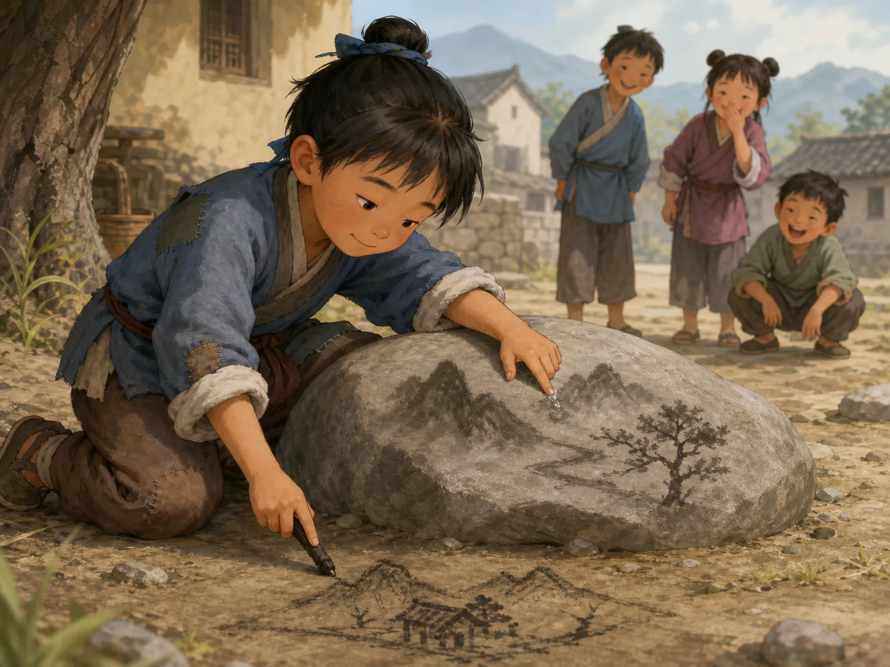
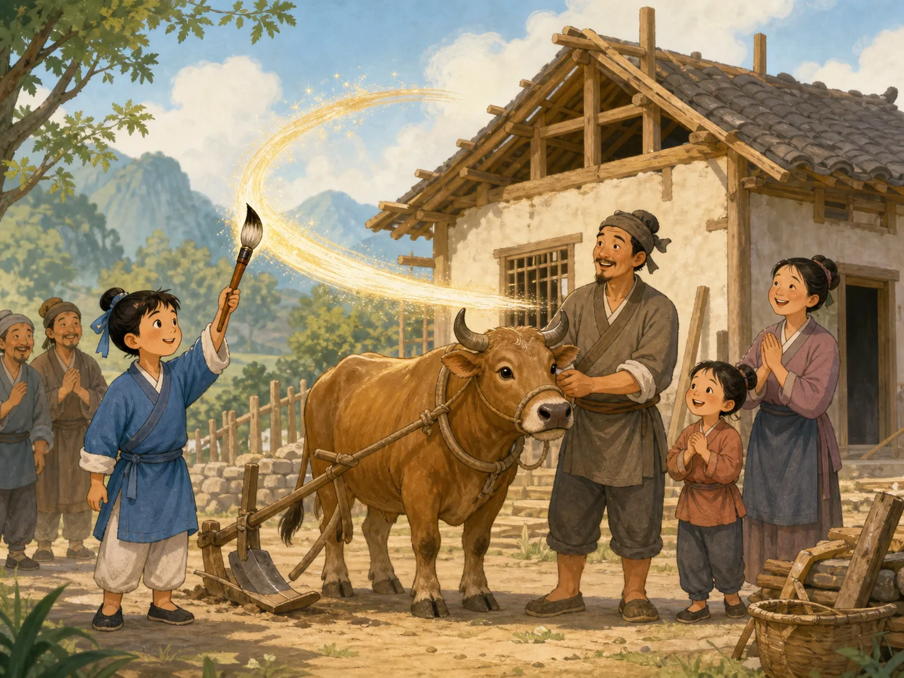

神笔马良
Ma Liang and the Magic Brush
Page 1
一个很想画画的孩子
A Boy Who Longed to Draw

Ma Liang cannot afford a brush, so he practices with wet fingers and bits of charcoal.
很久以前，传说里有一个孩子叫马良。
他家里很穷，连一支毛笔都买不起，可是他特别喜欢画画。
他会用手指蘸水在石头上画，也会用烧黑的木棍在地上画。
别人笑他，可他还是一直在练。
Long ago, in a legend, there was a boy named Ma Liang.
His family was very poor, and he could not even buy a brush, but he loved drawing more than anything.
He drew with wet fingers on stone and with burned sticks on the ground.
Other people laughed at him, but he kept practicing anyway.
Page 2
一支神奇的笔
A Magical Brush

As soon as Ma Liang draws a rooster, it seems to come alive.
有一天晚上，马良梦见一位白胡子老人送给他一支笔。
第二天早上醒来，那支笔真的就在他的身边。
马良拿起笔画了一只公鸡，公鸡竟然活了过来。
从这时候起，他发现这是一支神笔，画什么，什么就会变成真的。
One night, Ma Liang dreamed that an old man with a white beard gave him a brush.
The next morning, the brush was really beside him.
Ma Liang drew a rooster, and the rooster came alive.
That was when he discovered it was a magic brush. Whatever he drew could become real.
Page 3
贪心的地主
The Greedy Landlord
Ma Liang draws a sea and a boat, and before the greedy landlord can celebrate, the waves grow wild.
消息传开以后，一个贪心的地主把马良抓了去。
地主想让他画金山银山，画更多的财宝给自己。
可是马良不愿意帮坏人。
他先画出大海，又画出小船，最后画出越来越大的风浪，把贪心的地主卷走了。
When the news spread, a greedy landlord had Ma Liang seized.
The landlord wanted him to draw mountains of gold and silver for him.
But Ma Liang would not use the brush to help a bad man.
So he drew a sea, then a boat, and finally a storm so great that it carried the greedy landlord away.
Page 4
把神笔用在穷人这一边
Using the Brush for the Poor

In later tellings, Ma Liang uses the magic brush to draw oxen, plows, and homes for poor families.
故事后来常常会接着说，马良去了更需要帮助的地方。
他给穷人画耕牛、画犁、画房子，让他们的日子好过一点。
所以大家记住马良，不只是因为他的笔很神奇。
更因为他知道，最好的本事应该用来帮助需要帮助的人。
Later, the story often says that Ma Liang went to places where help was needed most.
He drew oxen, plows, and homes for poor people so their lives could become a little easier.
So people remember Ma Liang not only because his brush was magical.
They also remember that he knew the best gift should be used to help those who needed it most.
一支神笔，一个善良的孩子
A Magic Brush and a Kind Heart
马良的故事告诉大家，本事很重要，心也很重要。
如果你会做很厉害的事，最好把它用在善良的一边。
Ma Liang's story reminds people that skill matters, but heart matters too.
If you can do something powerful, it is best to use that power on the side of kindness.